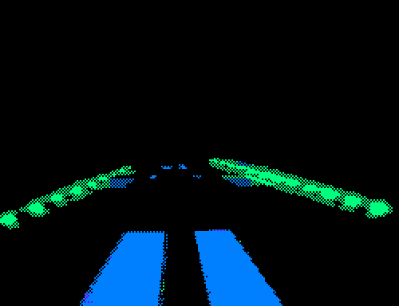

My name is Will Payne, and I'm the instructor for Geography N80 - Digital Worlds. This is an example of a very simple website to give you a sense of what goes into making a page out of HTML and CSS. I wanted to make this page look extremely DIGITAL... so I found this cool glitchy GIF by the artist Max Capacity.
This page took about five minutes to make. When you finish Lab 0, you'll be able to make a page even better than this, if you can believe it!